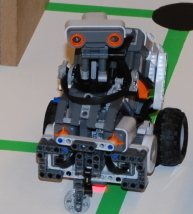

Users
Labyrinth & Rubik's cube solver

Julie De Pril, Marc Ducobu, and Dany Maslowski, three students
of Mathematical
Department of the University of Mons have used
the Mindstorm module to develop two robots:
- The first one finds the exit of a labyrinth or tells that there is none. It guides itself following green lines drawn on the floor thanks to a light sensor underneath and detects walls with his ultrasonic "head".
- The second one solves a Rubik's cube. It is based on the great ideas of Herbert Kociemba.